Welcome To Spiti Valley
The term Spiti means 'The Middle Land', as Spiti Valley separates India from Tibet. True to its name, Spiti is home to several monasteries. Notably the stunning Key Monastery that is over a thousand years old and is also the largest monastery to be found in the entire Spiti Valley.
 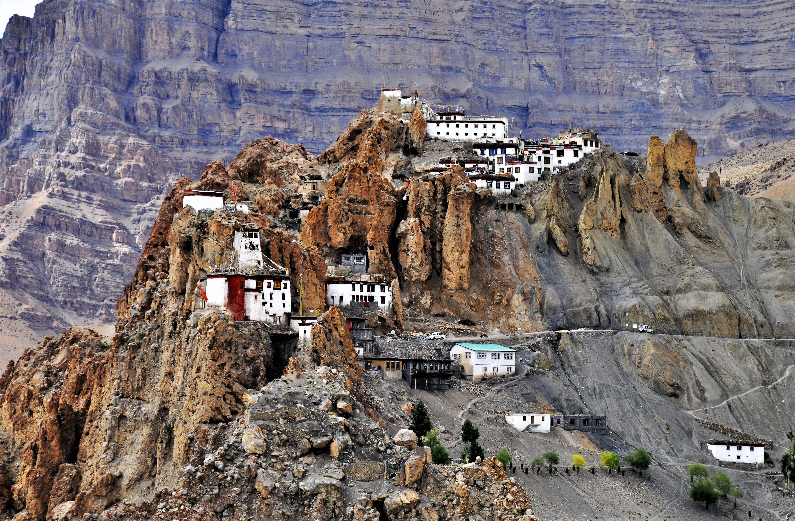
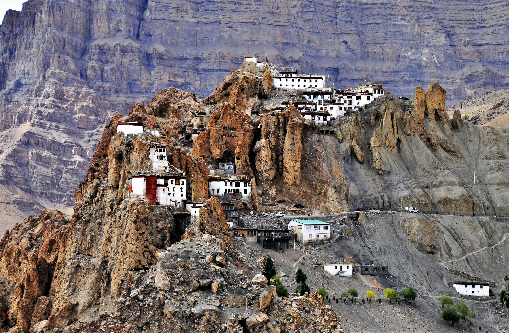
 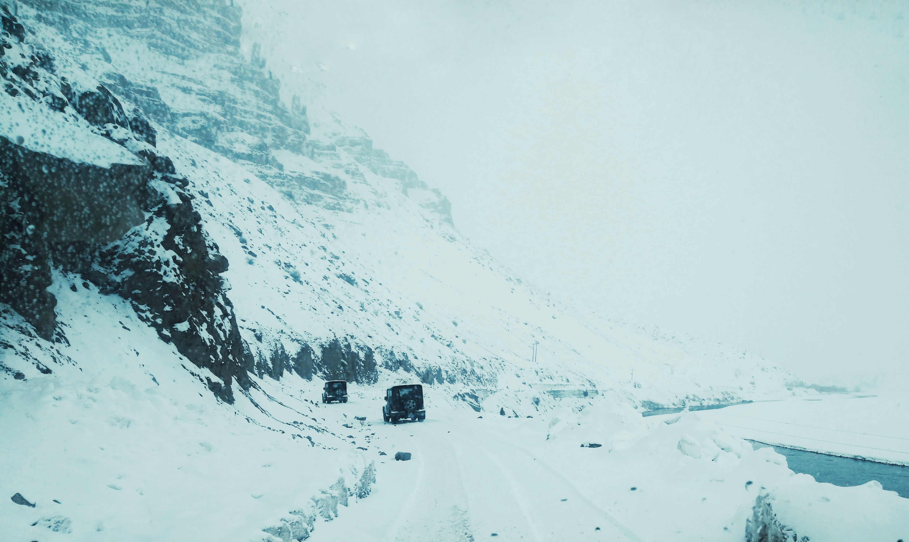
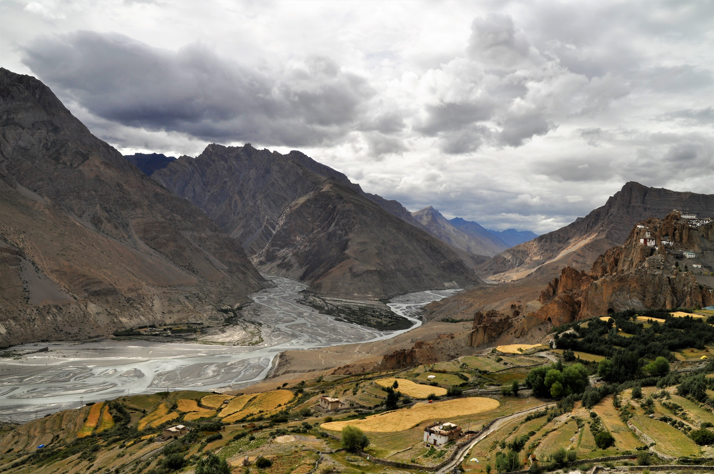
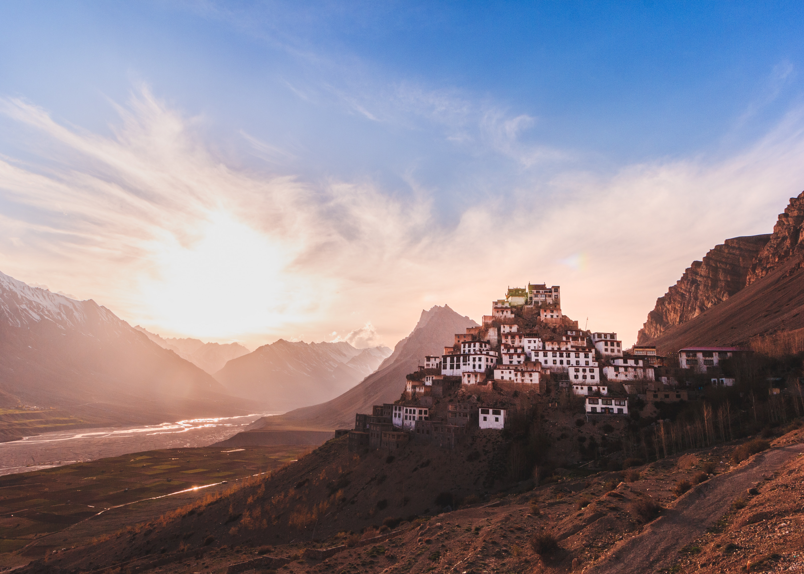
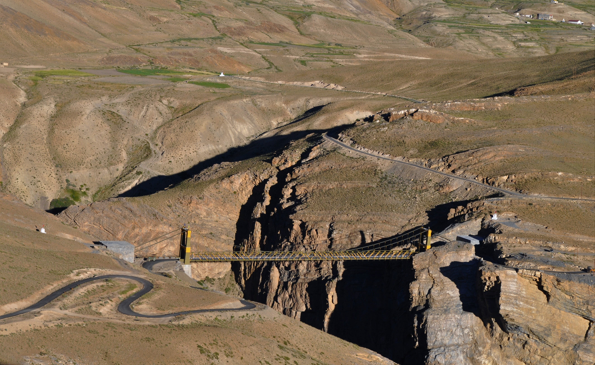
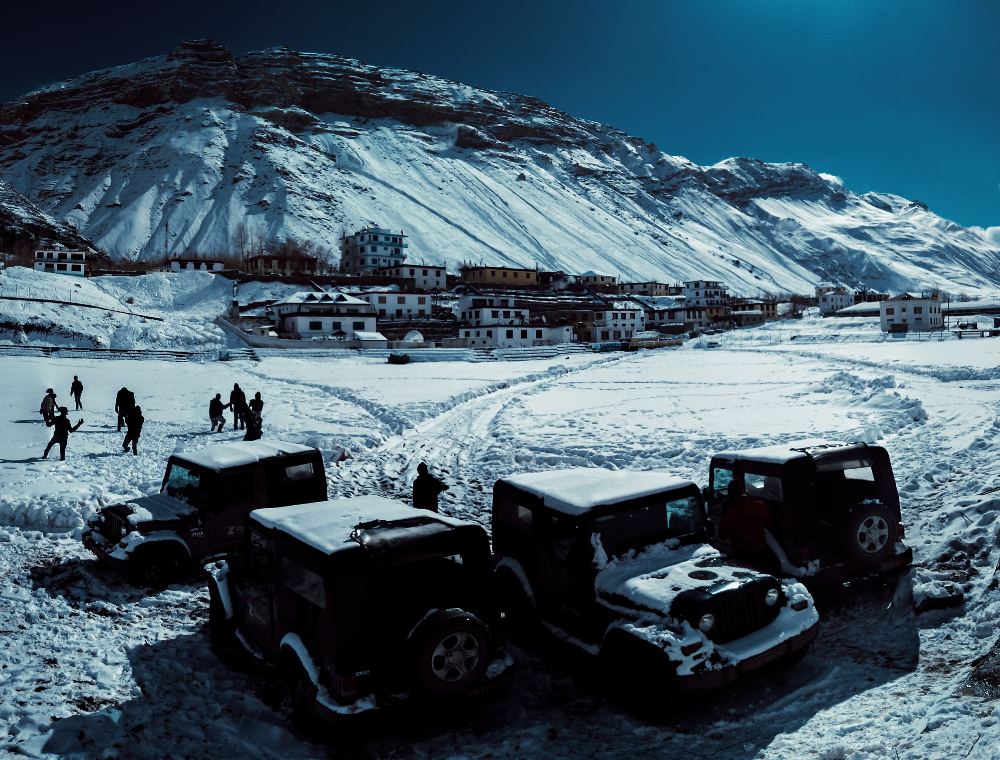
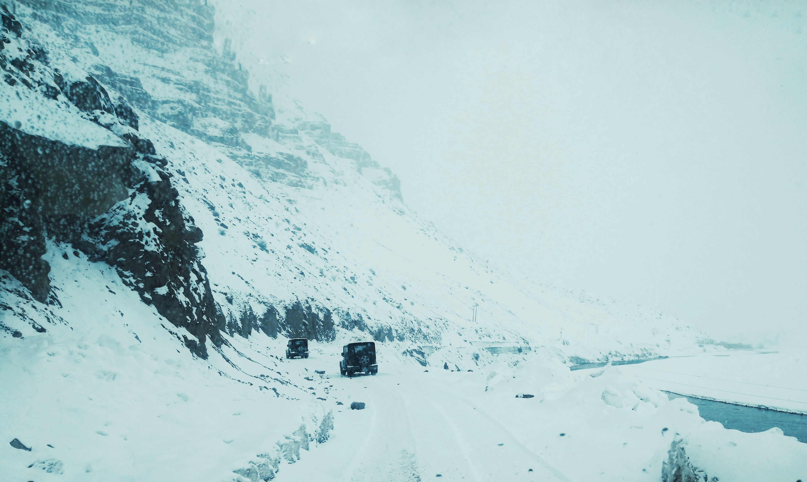
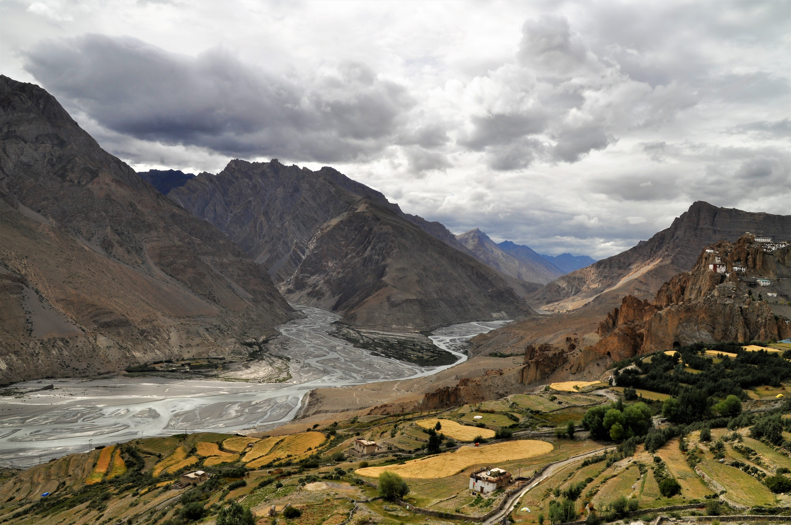
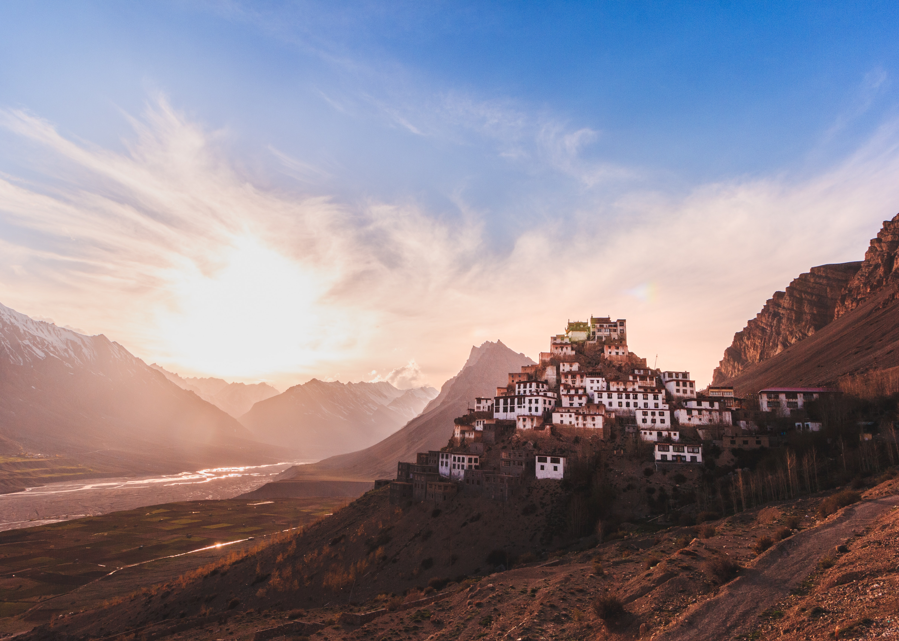
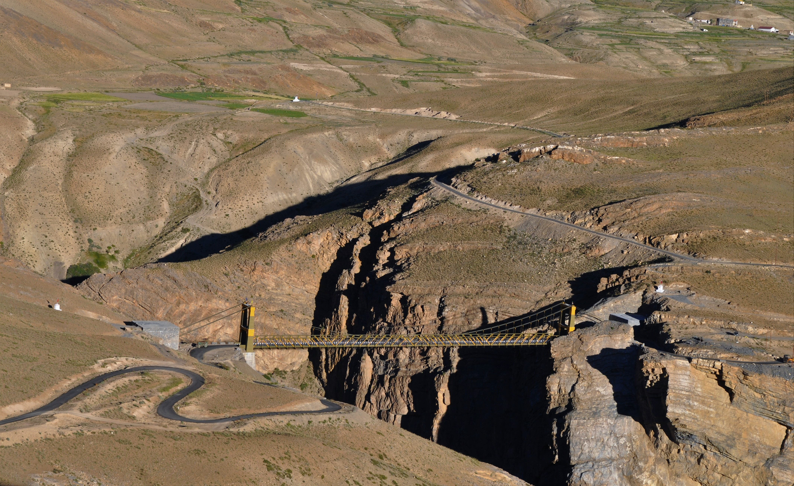
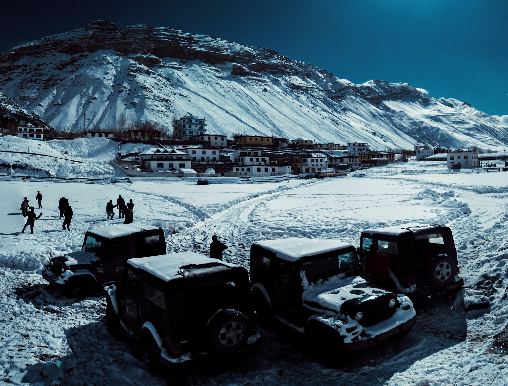
 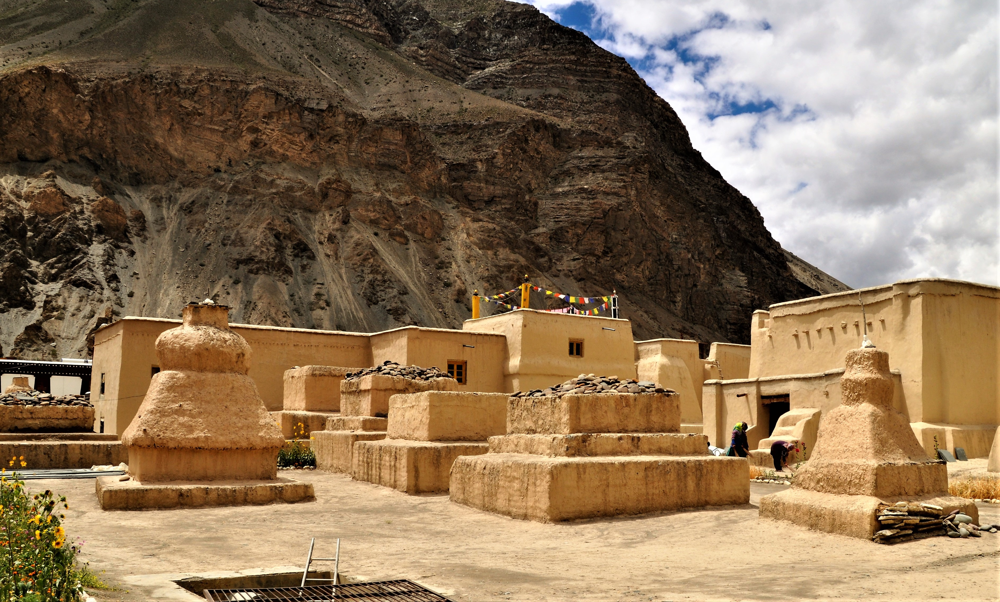
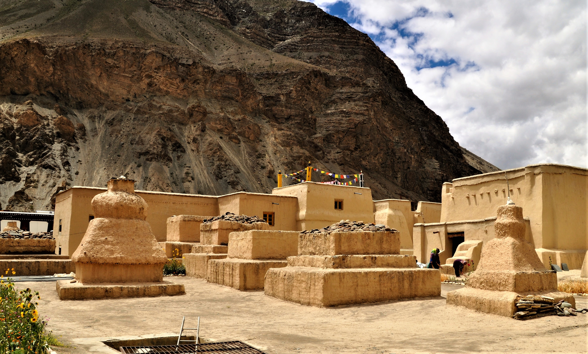